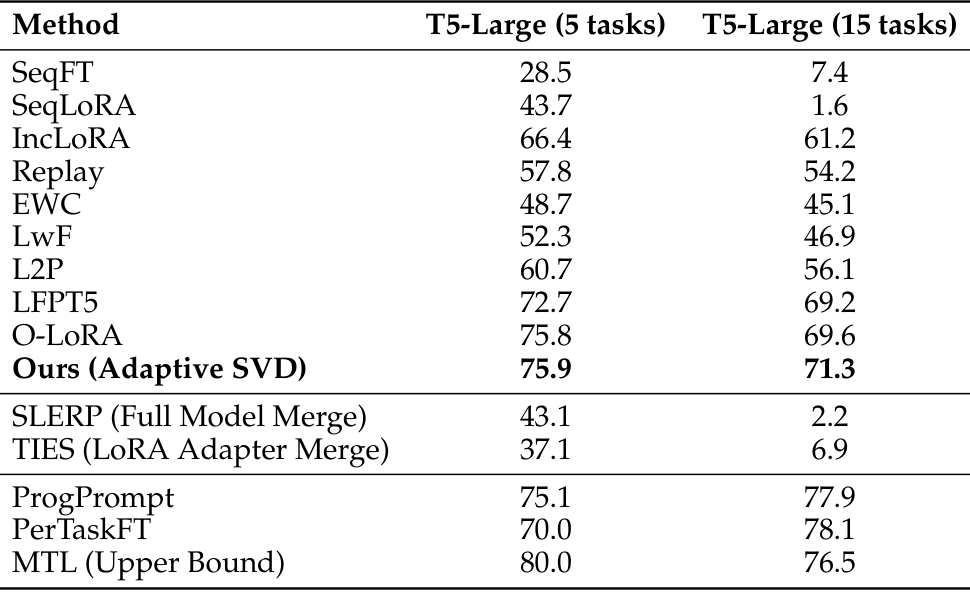
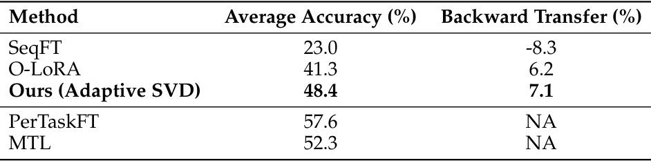
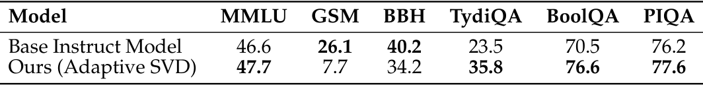
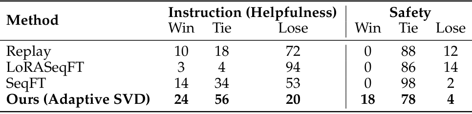
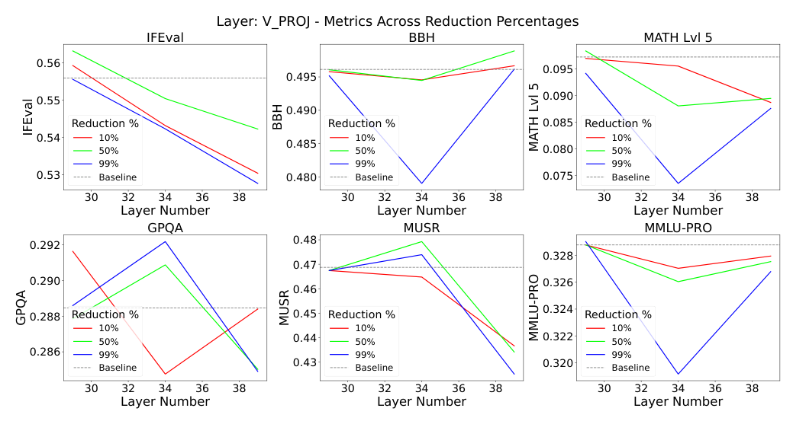
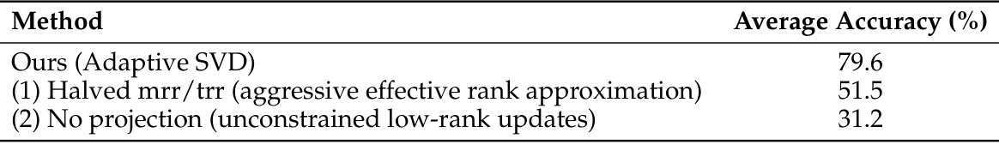

Sculpting Subspaces: Constrained Full Fine-Tuning in LLMs for Continual Learning
Fine-tune a language model on one task, then on another, and the second update overwrites part of the first. This is catastrophic forgetting, and the usual fixes give something up. Adapters such as LoRA freeze most of the model and add new parameters for every task. Replay methods keep old data around. We show that a model can be fine-tuned in full, task after task, without either.
Our method updates every weight matrix, but only in directions that earlier tasks do not use. It finds those directions with a singular value decomposition (SVD) of each layer, and decides layer by layer how much to protect. On a 15-task benchmark with T5-Large it reaches 71.3% average accuracy, where plain sequential fine-tuning ends at 7.4%. On TRACE with LLaMA-2-7B-Chat it reaches 48.4%, against 41.3% for O-LoRA.

Why full fine-tuning forgets, and why adapters are not the fix
When a model is fine-tuned on a new task, gradient descent is free to move any parameter in any direction. Nothing stops it from changing exactly the directions the previous task relied on. Parameter-efficient methods avoid this by training only a small adapter per task. That works, but the adapters add up: a 15-task stream means 15 sets of extra parameters, and each task learns in a small, fixed slice of the model. Regularisation methods such as EWC penalise changes to important weights without preventing them, so interference still builds up over a long sequence.
We want three things at once: update all parameters, keep the parameter count fixed, and leave earlier tasks alone. What makes this possible is that a weight matrix is not equally important in every direction.
The idea: protect the large singular directions
Write each weight matrix of layer \(l\) with its SVD,
\[ W^{(l)} = U^{(l)}\,\Sigma^{(l)}\,\big(V^{(l)}\big)^{\top}, \]where the singular values in \(\Sigma^{(l)}\) are sorted from large to small, and the columns of \(U^{(l)}\) and \(V^{(l)}\) are the output and input directions they belong to. Directions with small singular values contribute little: many of them can be removed and the model barely changes. Directions with large singular values carry what the model knows. So the rule is simple. Keep the top directions for what has already been learned, and let the new task update the rest. The SVD is computed once per task, not at every step.
Why singular values? A second-order Taylor expansion of the old tasks' loss says forgetting is smallest when updates avoid the high-curvature directions of the Hessian. A Hessian for a 7B-parameter model is out of reach, but its largest eigen-directions line up well with the largest singular directions of the weights. The SVD is a cheap stand-in.
Ingredient 1: how much to protect, layer by layer
Not every layer needs the same protection. We measure a layer's importance by how little it changes its input. Run \(N\) samples from the previous task through the layer and compare the input activations \(X^{(l)}_i\) with the outputs \(Y^{(l)}_i = W^{(l)}X^{(l)}_i\):
\[ I^{(l)} = \frac{1}{N}\sum_{i=1}^{N} \cos\big(X^{(l)}_i,\; Y^{(l)}_i\big). \]A layer with high similarity mostly passes representations through, and those are the layers that carry features from one task to the next. The scores are normalised to average one across layers. Two hyperparameters turn a score into a retention ratio: a minimum ratio (mrr) that every layer keeps, and a target ratio (trr) for a layer of average importance,
\[ r^{(l)} = \mathrm{mrr} + I^{(l)}\,\big(\mathrm{trr} - \mathrm{mrr}\big). \]The top \(r^{(l)}\) fraction of singular vectors form the protected subspace \(U^{(l)}_{\text{high}}, V^{(l)}_{\text{high}}\). We also tried a fixed rank everywhere, as in LASER, which ignores how different layers are, and thresholds from random-matrix theory, as in SPECTRUM, which turned out to be unstable across a sequence of tasks.
Ingredient 2: project the gradient
With the protected subspace fixed, every gradient step removes the part of the gradient that would move it:
\[ \nabla W^{(l)}_{\text{proj}} = \nabla W^{(l)} - U^{(l)}_{\text{high}}\big(U^{(l)}_{\text{high}}\big)^{\top}\,\nabla W^{(l)}\,V^{(l)}_{\text{high}}\big(V^{(l)}_{\text{high}}\big)^{\top}. \]The optimizer then steps with \(\nabla W^{(l)}_{\text{proj}}\) as usual. Every parameter can still change, but the change lies in the subspace earlier tasks did not need. No gradients from old tasks are stored, and nothing is added to the model.
The training loop
For each new task:
- Score. Compute the layer importance \(I^{(l)}\) from the previous task's activations.
- Split. Take the SVD of each weight matrix and keep the top \(r^{(l)}\) singular vectors as the protected subspace.
- Train. Fine-tune on the new task, replacing every gradient with its projection.
Results
We evaluate T5-Large and LLaMA-2 7B on the standard 5-task benchmark (AG News, Amazon, Yelp, DBpedia, Yahoo) and on a 15-task benchmark that adds tasks from GLUE, SuperGLUE and IMDB. We report average accuracy over all tasks after training on the last one, averaged over three task orders.

Standard benchmarks. Plain sequential fine-tuning drops to 7.4% on the 15-task stream. We reach 75.9% on 5 tasks and 71.3% on 15, ahead of O-LoRA (75.8% and 69.6%) and of every replay and regularisation baseline. The margin grows with the length of the stream. ProgPrompt is higher on 15 tasks, but it adds a prompt for every task. With LLaMA-2 7B on the 5-task benchmark we reach 79.6%, more than three points above the previous best.
TRACE. TRACE is closer to how models are used: eight instruction-tuned tasks covering multilingual understanding, domain knowledge, arithmetic and code, learned one after another by LLaMA-2-7B-Chat. We reach 48.4% average accuracy against 41.3% for O-LoRA. Backward transfer is positive (7.1), so on average the earlier tasks got slightly better as later ones were learned.

What the model keeps. A chat model that learns eight tasks but forgets how to chat is not much use. After TRACE, general ability holds or improves on MMLU, TydiQA, BoolQ and PIQA. GSM8K and BBH drop, so multi-step math and reasoning is where the cost shows. Against the original chat model, ours wins or ties 80% of helpfulness comparisons and 96% of safety comparisons, while replay, sequential LoRA and plain fine-tuning mostly lose on helpfulness.


Is the low-rank subspace really free? The method assumes that small singular directions can be overwritten without harm. We test this on Granite 8B by replacing weight matrices with low-rank approximations, layer by layer, and re-running the Open LLM Leaderboard tasks. Scores move very little until almost the whole spectrum is removed.

What matters. Both ingredients are needed:
- Adaptive retention. Halving mrr and trr, so that less is protected, drops 5-task accuracy with LLaMA-2 7B from 79.6% to 51.5%.
- Projection. Without it, low-rank updates still interfere freely with earlier tasks, and accuracy falls to 31.2%.

Limitations
- Rank sensitivity. Performance drops sharply when the retention ratios are badly chosen. A more data-driven way to set the rank would help.
- Fixed budget. Capacity is allocated up front, so on very long task streams the free subspace can run out.
- Cost. Repeated SVDs of every weight matrix add compute on large models.
Takeaway
Full fine-tuning and continual learning are not at odds. Weight matrices have room to spare in their small singular directions. Once updates are confined to that room, a model can keep learning new tasks at a fixed size without overwriting the old ones.
Citation
@inproceedings{nayak2026sculpting,
title = {Sculpting Subspaces: Constrained Full Fine-Tuning in {LLMs} for Continual Learning},
author = {Nayak, Nikhil Shivakumar and Killamsetty, Krishnateja and Han, Ligong and Bhandwaldar, Abhishek and Chanda, Prateek and Xu, Kai and Wang, Hao and Pareja, Aldo and Silkin, Oleg and Eyceoz, Mustafa and Srivastava, Akash},
booktitle = {International Conference on Learning Representations},
year = {2026}
}